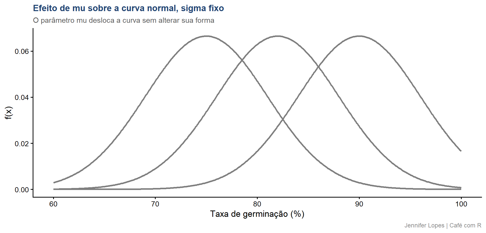
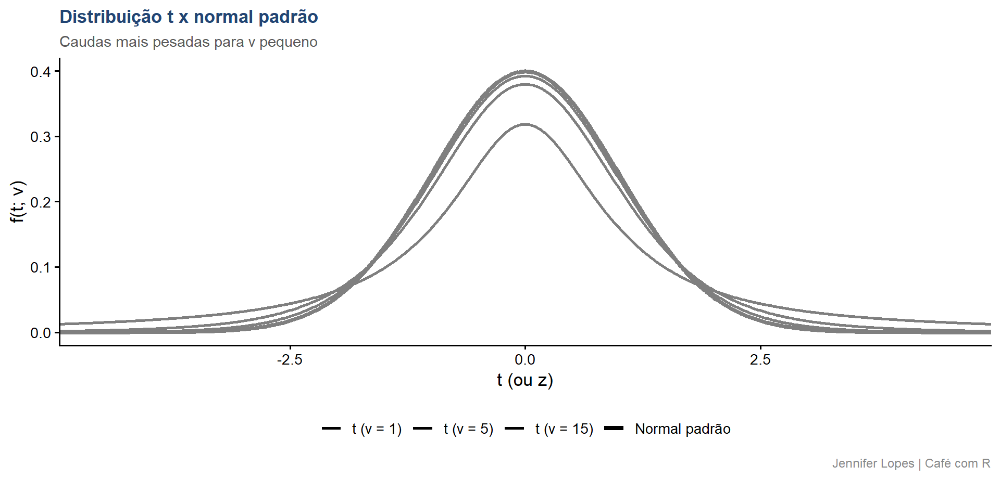
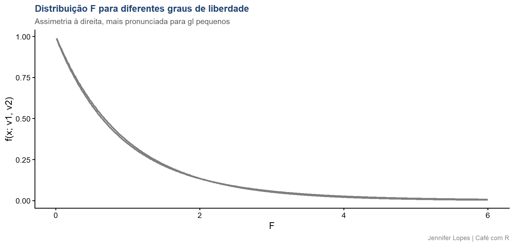
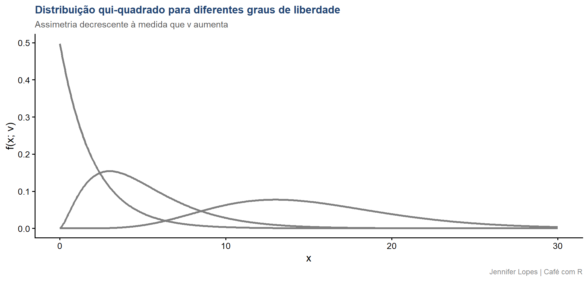

Aula 37. As quatro distribuições que sustentam a inferência
Normal, t de Student, F de Snedecor e Qui-quadrado, e quando cada uma aparece
Acompanhe o Café com R
SITE OFICIAL > https://jenniferlopes.github.io/meu_site/
Objetivos da aula
- Definir formalmente a distribuição Normal, a distribuição t de Student, a distribuição F de Snedecor e a distribuição Qui-quadrado
- Compreender os parâmetros que determinam a forma de cada distribuição
- Reconhecer a relação matemática entre as quatro distribuições
- Identificar em qual situação prática cada distribuição aparece
- Aplicar as quatro distribuições a um único conjunto de dados, um ensaio de germinação de sementes
- Evitar os erros mais comuns na escolha da distribuição correta
Bloco Inicial
Por que Quatro Distribuições?
Panorama, o papel de cada distribuição
| Distribuição | Parâmetro | Papel na inferência |
|---|---|---|
| Normal | \(\mu\), \(\sigma^2\) | Descreve a variável original e a distribuição da média amostral |
| t de Student | \(\nu\) (graus de liberdade) | Substitui a normal quando \(\sigma\) é desconhecido |
| F de Snedecor | \(\nu_1\), \(\nu_2\) | Compara duas variâncias, base da ANOVA |
| Qui-quadrado | \(\nu\) (graus de liberdade) | Compara frequências observadas e esperadas, base de testes de proporção |
- As quatro distribuições estão matematicamente conectadas. A t nasce da razão entre uma normal e uma qui-quadrado. A F nasce da razão entre duas qui-quadrado. Entender a normal é a base para entender as outras três.
Bloco 1
Distribuição Normal
Definição e função de densidade
- Uma variável aleatória contínua \(X\) segue distribuição normal com média \(\mu\) e variância \(\sigma^2\), notação \(X \sim \mathcal{N}(\mu, \sigma^2)\), se sua função de densidade de probabilidade é:
\[f(x) = \frac{1}{\sigma\sqrt{2\pi}} \exp\left(-\frac{(x-\mu)^2}{2\sigma^2}\right), \quad -\infty < x < +\infty\]
| Símbolo | Significado |
|---|---|
| \(f(x)\) | Densidade de probabilidade no ponto x |
| \(\mu\) | Média populacional, parâmetro de localização |
| \(\sigma^2\) | Variância populacional, parâmetro de escala |
| \(\exp(\cdot)\) | Função exponencial |
Propriedades fundamentais
Simetria perfeita em torno de \(\mu\), a curva é um espelho de si mesma.
Média, mediana e moda coincidem, os três valores são iguais a \(\mu\).
Os parâmetros \(\mu\) e \(\sigma^2\) determinam completamente a distribuição, não há outros parâmetros envolvidos.
Teorema Central do Limite: a média amostral \(\bar{X}\) de n observações independentes converge para \(\mathcal{N}(\mu, \sigma^2/n)\) quando n cresce, mesmo que a variável original não seja normal. Na prática, a aproximação já é boa para \(n \geq 30\).
Padronização e regra empírica
Quando \(\mu = 0\) e \(\sigma^2 = 1\), a distribuição é chamada normal padrão, \(Z \sim \mathcal{N}(0,1)\).
Qualquer normal pode ser convertida em normal padrão pela padronização:
\[z = \frac{x - \mu}{\sigma}\]
- Regra empírica 68, 95, 99,7: aproximadamente 68% dos valores estão a até 1 desvio padrão da média, 95% a até 2 desvios padrão, e 99,7% a até 3 desvios padrão.
Código: curvas normais com parâmetros diferentes
Gráfico: efeito de \(\mu\) e \(\sigma\) sobre a curva

Quando aparece na prática
Contexto: um ensaio de germinação avalia três cultivares de sementes, A, B e C. Cada bandeja contém 50 sementes, e a taxa de germinação é medida em porcentagem.
A taxa de germinação, por resultar da soma de muitos fatores independentes, tende a se aproximar de uma distribuição normal.
Antes de qualquer teste paramétrico, é necessário verificar se essa aproximação é razoável nos dados observados.
Código: verificação da normalidade
Output: verificação da normalidade
# A tibble: 1 × 4
media dp shapiro_estatistica shapiro_p
<dbl> <dbl> <dbl> <dbl>
1 82.3 6.84 0.989 0.851- O valor de p do teste de Shapiro-Wilk não indica evidência contra a normalidade, o que confirma que a suposição de distribuição normal é adequada para a taxa de germinação nesta amostra.
Bloco 2
Distribuição t de Student
Definição e motivo de existir
- Em 1908, William Sealy Gosset, publicando sob o pseudônimo Student, derivou a distribuição da estatística:
\[t = \frac{\bar{X} - \mu}{S/\sqrt{n}}\]
quando os dados provêm de uma normal com \(\sigma\) desconhecido.
| Símbolo | Significado |
|---|---|
| \(\bar{X}\) | Média amostral |
| \(S\) | Desvio padrão amostral, estimativa de \(\sigma\) |
| \(S/\sqrt{n}\) | Erro padrão estimado |
- Substituir \(\sigma\) por \(S\) introduz incerteza adicional, o que torna as caudas dessa distribuição mais pesadas que as da normal.
Graus de liberdade e forma da curva
\[f(t;\nu) = \frac{\Gamma\left(\frac{\nu+1}{2}\right)}{\sqrt{\nu\pi}\,\Gamma\left(\frac{\nu}{2}\right)} \left(1 + \frac{t^2}{\nu}\right)^{-\frac{\nu+1}{2}}\]
\(\nu = n - 1\) são os graus de liberdade, o único parâmetro da distribuição t.
Quanto menor \(\nu\), mais pesadas as caudas, refletindo maior incerteza sobre \(\sigma\) com poucos dados.
Quanto maior \(\nu\), mais a distribuição t se aproxima da normal padrão. Para \(\nu > 30\), a diferença já é pequena. Para \(\nu > 120\), é praticamente desprezível.
Código: t x normal para diferentes graus de liberdade
t_seq <- seq(-5, 5, length.out = 600)
curvas_t <- map_dfr(c(1, 5, 15), function(nu) {
tibble(t = t_seq, y = dt(t_seq, df = nu),
rotulo = paste0("t (ν = ", nu, ")"))
}) |>
bind_rows(tibble(t = t_seq, y = dnorm(t_seq), rotulo = "Normal padrão")) |>
mutate(rotulo = factor(rotulo, levels = c(
"t (ν = 1)", "t (ν = 5)", "t (ν = 15)", "Normal padrão")))Gráfico: t x normal

Quando aparece na prática
Contexto: comparar a taxa média de germinação entre a Cultivar A e a Cultivar B, com amostra de 20 bandejas por cultivar e \(\sigma\) populacional desconhecido.
Essa é exatamente a situação em que a distribuição t substitui a normal, o desvio padrão populacional não é conhecido e é estimado a partir da amostra.
Código: teste t entre duas cultivares
dados_ab <- amostra_germinacao |>
filter(cultivar %in% c("Cultivar A", "Cultivar B"))
resultado_t <- t.test(taxa_germinacao ~ cultivar, data = dados_ab)
tibble(
estatistica_t = resultado_t$statistic,
graus_liberdade = resultado_t$parameter,
valor_p = resultado_t$p.value) |>
mutate(across(where(is.numeric), ~ round(.x, 4)))Output: teste t entre duas cultivares
# A tibble: 1 × 3
estatistica_t graus_liberdade valor_p
<dbl> <dbl> <dbl>
1 2.83 38.0 0.0073- A estatística t obtida, com os graus de liberdade correspondentes, é comparada à distribuição t apresentada anteriormente para determinar o valor de p. Um valor de p pequeno indica que a diferença observada entre as duas cultivares dificilmente ocorreria apenas por variação amostral.
Bloco 3
Distribuição F de Snedecor
Definição, razão de variâncias
- Se \(U \sim \chi^2_{\nu_1}\) e \(V \sim \chi^2_{\nu_2}\) são independentes, então:
\[F = \frac{U/\nu_1}{V/\nu_2}\]
segue uma distribuição F com \(\nu_1\) graus de liberdade no numerador e \(\nu_2\) no denominador, \(F(\nu_1, \nu_2)\).
- Na ANOVA, a estatística F é a razão entre duas estimativas de variância:
\[F = \frac{QM_{\text{tratamentos}}}{QM_{\text{resíduo}}}\]
- Sob a hipótese de que todos os tratamentos têm a mesma média, \(F \approx 1\). Quanto maior a diferença real entre os tratamentos, maior o valor de F.
Forma da curva
Não negatividade: \(F \geq 0\) sempre, é a razão de duas grandezas não negativas.
Assimetria à direita, mais pronunciada quando \(\nu_1\) e \(\nu_2\) são pequenos, tornando-se mais simétrica com o aumento dos graus de liberdade.
Relação com a distribuição t: se \(T \sim t_\nu\), então \(T^2 \sim F(1, \nu)\). O quadrado de uma estatística t segue distribuição F com 1 grau de liberdade no numerador.
Código: curvas F para diferentes graus de liberdade
Gráfico: curvas F

Quando aparece na prática
Contexto: comparar a taxa média de germinação entre as três cultivares, A, B e C, simultaneamente. Comparar par a par com múltiplos testes t infla o erro tipo I, a ANOVA resolve essa comparação em um único teste.
Os graus de liberdade do numerador correspondem ao número de cultivares menos 1, e os do denominador correspondem ao total de bandejas menos o número de cultivares.
Código: ANOVA entre as três cultivares
Output: ANOVA entre as três cultivares
# A tibble: 2 × 6
fonte Df `Sum Sq` `Mean Sq` `F value` `Pr(>F)`
<chr> <dbl> <dbl> <dbl> <dbl> <dbl>
1 "cultivar " 2 591. 295. 7.75 0.0011
2 "Residuals " 57 2171. 38.1 NA NA - A estatística F obtida é comparada à distribuição F com os graus de liberdade do modelo. Um valor de p pequeno indica que ao menos uma cultivar difere das demais quanto à taxa média de germinação.
Bloco 4
Distribuição Qui-quadrado
Definição, soma de normais padrão ao quadrado
- Se \(Z_1, Z_2, \ldots, Z_\nu\) são variáveis normais padrão independentes, então:
\[\chi^2_\nu = \sum_{i=1}^{\nu} Z_i^2\]
segue uma distribuição qui-quadrado com \(\nu\) graus de liberdade.
| Propriedade | Valor |
|---|---|
| Média | \(E[\chi^2_\nu] = \nu\) |
| Variância | \(\text{Var}(\chi^2_\nu) = 2\nu\) |
| Domínio | \(\chi^2_\nu \geq 0\) sempre |
- Essa distribuição também descreve a variância amostral: \((n-1)S^2/\sigma^2 \sim \chi^2_{n-1}\).
Forma da curva
Assimetria à direita, forte para \(\nu\) pequeno, decrescendo progressivamente com o aumento de \(\nu\).
Para \(\nu\) grande, a distribuição se aproxima da normal, por força do Teorema Central do Limite.
É a base do teste de aderência, que compara frequências observadas a frequências esperadas sob uma hipótese, e do teste de independência, que avalia associação entre variáveis categóricas.
Código: curvas qui-quadrado para diferentes graus de liberdade
Gráfico: curvas qui-quadrado

Quando aparece na prática
Contexto: o fornecedor das sementes declara germinação esperada de 80%. O teste de aderência verifica se a proporção observada na amostra é compatível com esse valor declarado.
As categorias comparadas são sementes germinadas e sementes não germinadas, somadas em toda a amostra de 60 bandejas.
Código: teste qui-quadrado de aderência
totais <- amostra_germinacao |>
summarise(
germinadas = sum(sementes_germinadas),
nao_germinadas = sum(sementes_totais) - sum(sementes_germinadas))
resultado_chi <- chisq.test(
x = c(totais$germinadas, totais$nao_germinadas),
p = c(0.80, 0.20))
tibble(
estatistica_chi = resultado_chi$statistic,
graus_liberdade = resultado_chi$parameter,
valor_p = resultado_chi$p.value) |>
mutate(across(where(is.numeric), ~ round(.x, 4)))Output: teste qui-quadrado de aderência
# A tibble: 1 × 3
estatistica_chi graus_liberdade valor_p
<dbl> <dbl> <dbl>
1 9.63 1 0.0019- A estatística qui-quadrado obtida é comparada à distribuição qui-quadrado com 1 grau de liberdade para determinar o valor de p. O resultado indica se a proporção de germinação observada nesta amostra é estatisticamente compatível com o valor de 80% declarado pelo fornecedor.
Bloco 5
Síntese
Quando cada distribuição aparece
| Situação prática | Distribuição usada |
|---|---|
| Descrever a variável original, verificar normalidade | Normal |
| Comparar a média de um grupo a um valor de referência, \(\sigma\) desconhecido | t |
| Comparar as médias de dois grupos independentes | t |
| Comparar as médias de três ou mais grupos | F |
| Testar a homogeneidade de variâncias entre grupos | F ou Qui-quadrado |
| Testar se uma proporção observada corresponde a um valor esperado | Qui-quadrado |
| Testar associação entre duas variáveis categóricas | Qui-quadrado |
Erro comum 1, tratar t como normal em amostra pequena
Usar os valores críticos da normal padrão em vez dos valores críticos da distribuição t, quando \(\sigma\) é desconhecido e a amostra é pequena, produz intervalos de confiança mais estreitos do que deveriam ser.
Essa prática gera uma falsa impressão de maior precisão na estimativa.
Erro comum 2, achar que F só serve para ANOVA
A distribuição F aparece em qualquer situação que envolva razão de duas variâncias, incluindo testes de homogeneidade de variância, como o teste de Levene em algumas de suas formulações, e a comparação entre modelos de regressão aninhados.
Restringir a distribuição F apenas à ANOVA limita seu uso em outras etapas da análise.
Erro comum 3, aplicar qui-quadrado com frequência esperada baixa
O teste qui-quadrado depende de uma aproximação que perde precisão quando as frequências esperadas em alguma categoria são baixas, geralmente abaixo de 5.
Nessas situações, o teste exato de Fisher é a alternativa mais apropriada, especialmente em tabelas pequenas.
Resumo: as quatro distribuições
| Distribuição | Domínio | Parâmetro | Função no R | Uso central |
|---|---|---|---|---|
| Normal | Real | \(\mu\), \(\sigma^2\) | dnorm(), pnorm() |
Descrição, TCL |
| t de Student | Real | \(\nu\) | dt(), t.test() |
Comparação de médias |
| F de Snedecor | Positivo | \(\nu_1\), \(\nu_2\) | df(), aov() |
ANOVA, comparação de variâncias |
| Qui-quadrado | Positivo | \(\nu\) | dchisq(), chisq.test() |
Aderência, independência |
Obrigada!

Continue praticando e explorando.
Esta aula é parte do projeto Café com R. É open source. Use, compartilhe e adapte.
Siga o Café com R
Que cada gole desperte uma nova ideia.
Que cada script abra uma nova conversa.
Que o Café com R se torne um ponto de encontro nosso.
SITE OFICIAL > https://jenniferlopes.github.io/meu_site/

Jennifer Lopes | Café com R